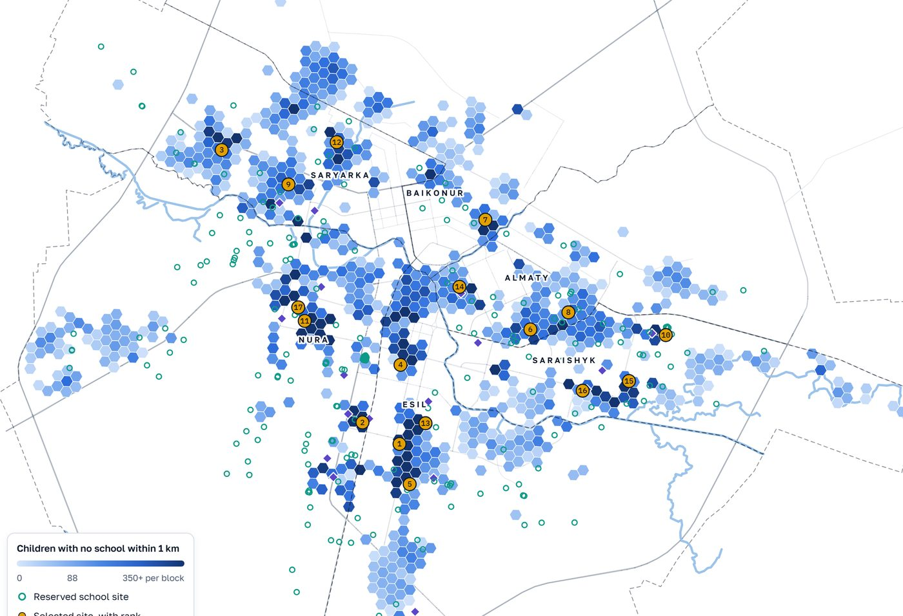

Diploma work · Astana IT University · 6B06103 Big Data Analysis · 2027
Data-Driven Framework for Spatial Accessibility Assessment and Optimal Siting of Social Infrastructure
Walking access from every home in Astana to every state school and preschool, built from open data and checked against official replies to information requests; and a test of where the city places its new schools.
Interactive atlas
22%
of school-age children live within the statutory 500 m of a school on foot; 64% as the crow flies
76%
of the city's mean access to schools in Nura, the fastest-growing district; Esil 81%
15%
of the 77,870 children without a school within 1 km reached by the 17 new schools of the 2026–2028 plan
2.4×
as many reached by the 17 best of 238 sites already reserved in the detailed plans; 1.9–3.4× in 90% of Monte Carlo draws

Atlas site screening: blue blocks are children with no state school within 1 km on foot; green rings reserved sites, gold the 17 best, violet diamonds the 2026–2028 plan. Block values are model estimates, not a census.
More findings
Schools are crowded as well as far: 1.7 pupils per design place, 45 of 120 schools beyond two full shifts, most in Saraishyk.
Preschools have places, 73,419 for 66,574 children, but only 34% of children live within 300 m on foot.
Distance is not the only goal: 17 sites chosen for distance reach 28,920 children and relieve 3,947 crowded pupils; chosen for crowding, 14,187 and 7,409; balanced, 25,161 and 6,015. The plan: 11,904 and 2,838. Fifteen sites are good on both.
Hypotheses
H1
Open data estimate population below the district better than WorldPop: district error 10% against 26%
Supported
H2
Deficits concentrate in growth districts: Nura and Esil worst for schools, but 92% of inequality lies within districts
In part
H3
The pattern is robust: same worst-served cells under every building-based surface (overlap 0.8); Nura or Esil worst in 199 of 200 draws
Cells
H4
Comfortable School sites follow free land (ROC-AUC 0.71) more than deficit (0.59); 84% of the optimum on free land
Direction
Looking ahead
2026
Children with no school within 1 km
77,870
2027
No new school opens
91,070
2028
Growth placed in new housing
106,002
2029
The pace of 2024–2026 continues
122,175
By 2030: 1.75–2.15 million people, 355–447 thousand of school age. The atlas shows every year.
1 · PopulationOfficial district totals over 386 polling-station territories and dwellings found by LightGBM (ROC-AUC 0.982)
2 · WalkingDistances from 39,735 dwellings on a 152,491-node street network
3 · AccessFloating catchment index, each child counted once; design capacity as supply
4 · EquityGini, Theil split by district, local Moran clusters, statutory compliance
5 · SitingCapacitated maximal covering on free land; 2023 backtest; ranking of reserved sites by distance and crowding; projection to 2030
Recommendations for the city
Measure the statutory radius on foot, not as a circle.
Plan by blocks: the deficit lies within districts.
Reserve land for schools before housing surrounds it.
Build first the reserved sites that reach the most children without a school; the atlas ranks all 238.
Data and reproducibility
OpenStreetMap, Overture buildings, the akim's decision on polling stations, Bureau of National Statistics age tables; official replies of the education and construction departments; INDIGO preschool register and city geoportal compiled by the project team. One command runs the 13-stage pipeline; 116 unit tests.